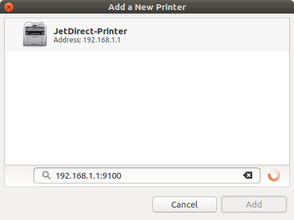
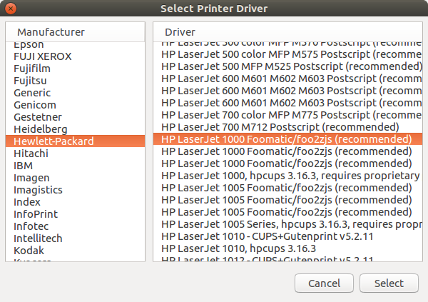

Distributed ledgers in the digital market
The blockchain technology is a distributed ledger for electronic transactions, which is used by various virtual currencies including bitcoin, the most popular virtual currency in the market. Melanie Swan, author of the book Blockchain: Blue Print for a New Economy, states that "Blockchains are an important new form of information technology, a descentralized infraestructure and organizational system that is universal, global, secure and granular"

The main characteristic of these ledgers is that they are handled by a distributed network of participants rather than a centralized entity. The participants are called nodes and a central validation system is not needed at all because of the nodes distributed topology. Another important consideration is the extensive use of cryptographic techniques to store the assets and validate the ledger transactions with a digitally secure approach.
Even though the most popular applications for the blockchain technology are the virtual currencies, it is increasingly finding new applications for the financial and banking industry. Those applications include the electronic payment infrastructure and the digital assets for the capital markets.
It is also possible to find distributed ledgers for the digital identities used by software applications, web sites and digital signatures. At the same time, distributed ledgers may be used to create verifiable registries for any data, file or business process, making these ledgers a mainstream technology in the digital market. As Blythe Masters, CEO of fintech firm Digital Asset, said recently: "We're at a tipping point where this technology is turning mainstream and this technology needs to be understood by a more mainstream audience."

The Linux Foundation launched the collaborative project Hyperledger, an effort to advance the blockchain technology by developing an open standard for the distributed ledgers. This initiative can potentially transform the way the business transactions are performed nowadays, and redefine the rules for different industries, such as healthcare, manufacturing and supply chain.
Access Twitter REST API from Perl
Twitter provides services to access information from the site through REST APIs. The HTTP process makes GET and POST requests in order to read or write data, and the Twitter endpoint sends responses to those requests using the JSON format. All requests should use Oauth authentication in order to identify particular users and applications accessing Twitter services.
This script will show you how to use the user authentication model to access the Twitter API, which is based on the open protocol Oauth 1.0. First, go to apps.twitter.com and login with your username and password. Then, click on the Create New App button. Name your app appropriately and fill in the requested data. Access your newly created application and click on the Keys and Access Tokens tab. You will need four keys from this tab
- Consumer Key (API Key)
- Consumer Secret (API Secret)
- Access Token
- Access Token Secret
Make sure you don't share neither your Consumer Secret nor your Access Token Secret with anyone. You can download the script from perl_oauth.pl and modify the keys accordingly. Let's import the modules for the script and define constants with the four keys from the apps.twitter.com page. Include the base url to access the REST API as well
#!/usr/bin/perl
use strict;
use warnings;
use URI::Escape;
use JSON::PP;
use Digest::MD5 qw(md5_hex);
use Digest::SHA qw(hmac_sha1_base64);
use Time::HiRes qw(time);
use constant {
CONSUMER_KEY => "Consumer key",
SECRET_KEY => "Consumer secret",
OAUTH_TOKEN => "Access token",
SECRET_TOKEN => "Access token secret",
TWITTER_API => "https://api.twitter.com/1.1/statuses/",
};
Declare a function with three parameters. A string for the type of request, a string for the url to be accessed and a hash for the parameters of the HTTP request. Declare local variables including a hash with OAuth parameters. The function md5_hex will be used for computing a unique random value for each request. This value will be stored in the variable oauth_nonce, its parameters are a random number concatenated to the result of the function time from Time::HiRes module. The HTTP data hash will be merged with the OAuth parameters for the subsequent computations
sub twitterOauth {
my ($req, $url, %getData) = @_;
my $secret_token = SECRET_TOKEN;
my $secret_key = SECRET_KEY;
my ($oauth_signature, $base_signature, $signing_key, $authorization, $response,
$parameter) = ('', '', '', '', '', '');
my %oauth_parameters = (
"oauth_consumer_key" => CONSUMER_KEY,
"oauth_nonce" => md5_hex(int time() . int rand(~0)),
"oauth_signature_method" => "HMAC-SHA1",
"oauth_timestamp" => int time(),
"oauth_token" => OAUTH_TOKEN,
"oauth_version" => "1.0",
);
$url = TWITTER_API . $url;
%oauth_parameters = (%oauth_parameters, %getData);
The signature method HMAC-SHA1 will be used for computing the Oauth signature, this method is provided by the function hmac_sha1_base64 in the module Digest::SHA. First, create a string separated by & characters containing all the data in the Oauth parameters hash, using the key=value format. Parameter keys should be sorted in alphabetical order. Then, create the base signature string by concatenating the HTTP method in uppercase with the percent encoded URL and the percent encoded string for oauth parameters, joining the strings with the & character.
Create the signing key by concatenating the Consumer Secret with the Access token secret, joining the strings with the & character. Remember to percent encode each string before concatenation. Now, compute the oauth signature with the base signature and the signing key. It's important to know that CPAN digest modules don't pad the computed base64 signature by convention. Therefore, manually pad the computed signature with the code from the CPAN documentation to avoid authentication errors when accessing the API
foreach $parameter (sort keys %oauth_parameters){
$base_signature .= "$parameter=$oauth_parameters{$parameter}&"
}
chop($base_signature); #remove trailing & character
$base_signature = uc($req) . '&' . uri_escape($url) . '&' . uri_escape($base_signature);
$signing_key = uri_escape($secret_key) . '&' . uri_escape($secret_token);
$oauth_signature = hmac_sha1_base64($base_signature, $signing_key);
# Pad base64 output, CPAN Digest modules don't pad by convention
while (length($oauth_signature) % 4) {
$oauth_signature .= '=';
}
Now we are ready to build the authorization string for the HTTP request. Use the key=value format and remember to percent encode each value.
$authorization = 'OAuth oauth_consumer_key="' . uri_escape($oauth_parameters{"oauth_consumer_key"}) .
'", oauth_nonce="' . uri_escape($oauth_parameters{"oauth_nonce"}) .
'", oauth_signature="' . uri_escape($oauth_signature) .
'", oauth_signature_method="' . uri_escape($oauth_parameters{"oauth_signature_method"}) .
'", oauth_timestamp="' . uri_escape($oauth_parameters{"oauth_timestamp"}) .
'", oauth_token="' . uri_escape($oauth_parameters{"oauth_token"}) .
'", oauth_version="' . uri_escape($oauth_parameters{"oauth_version"}) . '"';
Let's use curl to access the Twitter API, using the --header option to pass the authorization string. Then, return the JSON formatted string received from API server.
$parameter = join('&', map{"$_=$getData{$_}"} keys %getData);
$parameter = "--" . lc($req) . " \'$url\' --data \'$parameter\' --header \'Authorization: $authorization\'";
$response = curl($parameter);
return $response;
}
sub curl {
my ($curl_args) = @_;
my $response;
# System call for curl
$curl_args = 'curl -k --silent -A "' .
'Mozilla/5.0 (Windows NT x.y; Win64; x64; rv:10.0) Gecko/20100101 Firefox/10.0" ' .
"$curl_args 2>&1";
$response = qx{$curl_args};
die "Unable to download webpage $curl_args " if ( $? == -1 );
return $response;
}
As an example, here is the code to download the last 12 tweets from the @twitterdev account and print the JSON formatted string in the standard output. The GET statuses/user_timeline HTTP request will be send. Remember to use JSON::PP module to decode the returned string for you particular needs.
print twitterOauth("GET", "user_timeline.json", (screen_name => "twitterdev", count => 12));
Convert HP LaserJet 1000 into a network printer with OpenWrt
The HP LaserJet 1000 is a black and white printer which comes with a USB cable to connect directly to a port in your computer. Nevertheless, if you have a router with OpenWrt installed and a spare USB port on it, you can connect your USB printer to the router and share it in your Local Area Network to allow access from any Windows or Linux computer.
To make this happen, you need both a firmware file for the printer and a printer server. The drivers for the printer send the firmware file every time the printer powers on, so the router should do the same. To get the printer firmware file, we will use foo2zjs, an open source printer driver which supports HP LJ 1000 printer. So, let's download the driver and unpack it
$ wget -O foo2zjs.tar.gz http://foo2zjs.rkkda.com/foo2zjs.tar.gz
$ tar zxf foo2zjs.tar.gz
$ cd foo2zjs
Compile and install it
$ make
$ ./getweb 1000
$ sudo make install
Now, under the foo2zjs folder. you will find the file sihp1000.dl, which is the firmware file that the router should send through the USB port every time the printer powers on. Store this file in your router file system under the folder /etc/config to preserve it whenever you update the router with the sysupgrade command. We will use the p910nd printer server, a small non-spooling printer daemon intended for disk-less linux hosts, which copies any data received on the port it is listening on to the corresponding printer port. Let's install the printer server and the USB printing module kmod-usb-printer
$ opkg update
$ opkg install kmod-usb-printer p910nd
Modify firewall configuration on /etc/config/firewall to accept packets on TCP port 9100
# Allow attached network printer hplj1000
config 'rule'
option 'src' 'lan'
option 'proto' 'tcp'
option 'dest_port' '9100'
option 'target' 'ACCEPT'
Check the file /etc/config/p910nd has the following information, assuming your router IP is 192.168.1.1
config p910nd
option device /dev/usb/lp0
option port 0
option bidirectional 1
option enabled 1
option bind 192.168.1.1
We need a script to send the firmware file to the printer any time it powers on. So, let's create the script /etc/hotplug.d/usb/hplj1000. Remember that we store the firmware file sihp1000.dl under the folder /etc/config
#!/bin/sh
FIRMWARE="/etc/config/sihp1000.dl"
if [ "$PRODUCT" = "3f0/517/120" ]
then
if [ "$ACTION" = "add" -a "$DEVTYPE" = "usb_interface" ]
then
logger "Sending firmware to HP LJ1000 printer..."
cat $FIRMWARE > /dev/usb/lp0
logger "done."
fi
fi
Start and enable the printer daemon
$ /etc/init.d/p910nd start
$ /etc/init.d/p910nd enable
At this point, the printer daemon is up and running. The next step is to install the printer on the computer. Depending on the OS on your computer, follow the instructions here, and use your router IP address and the port 9100. For instance, if you have Ubuntu installed in your computer, go to printers and click the + button to add a printer and type 192.168.1.1:9100 in the network address input field, assuming that's your router IP. A JetDirect printer will appear, select it and then choose the HP foo2zjs driver previously installed, see the two images bellow


Finally, if you need to spool jobs, there is an easy workaround. After installing the network printer on your computer, go to Google cloud print and add the printer using the Add a Classic Printer option. Then, share this printer to the users you need. This way, any person with the shared printer can send print jobs, and they will be sent to the printer whenever chrome runs on your computer. Remember to synchronize chrome to your Google account for the spooling to work.
Upgrade an OpenWrt router using development snapshots
OpenWrt is a great distribution aimed to install a small Linux version in your embedded system, particularly your router. It supports lots of routers nowadays and new models are constantly added to the code base. There are two versions available for your router, the stable release, which was updated on March 2016 and received the name Chaos Calmer 15.05.1. The other available version is the development branch, known as Designated Driver.
Although you can build the development branch from the GitHub repository, there are pre-built snapshots available here. They does not have any web interface, therefore, all the installation process is performed from the command line interface. To showcase the process, let's update a TP-Link WDR3500 router using the build snapshot. Make sure you check the snapshots page to find a suitable image for your particular router! If you install the wrong image, you will brick your router . Before starting, let's make a configuration backup in case some unexpected result happens during the update process
$ sysupgrade --create-backup /tmp/backup_conf.tar.gz
Now, copy your backup from /tmp to your computer using scp command. Usually the storage on a router is quite limited. Therefore, we will check if the RAM available is enough to store the snapshot image in the /tmp filesystem
$ free
total used free shared buffers cached
Mem: 125196 26496 98700 88 1944 5748
-/+ buffers/cache: 18804 106392
Swap: 0 0 0
The size of the snapshot image is usually around 3.2MB for this particular router, so we have more than enough space. Let's change working directory to /tmp, download the snapshot image and the checksum file to check image integrity
$ cd /tmp
$ wget http://downloads.openwrt.org/snapshots/trunk/ar71xx/generic/md5sums
$ wget http://downloads.openwrt.org/snapshots/trunk/ar71xx/generic/openwrt-ar71xx-generic-tl-wdr3500-v1-squashfs-sysupgrade.bin
Now check image integrity with de md5sum command. If you don't get any output after running the command, the image file is corrupt. Download the image again and check it before any further step in order to avoid bricking your router
$ md5sum -c md5sums 2> /dev/null | grep OK
openwrt-ar71xx-generic-tl-wdr3500-v1-squashfs-sysupgrade.bin: OK
By now, We have the snapshot in our temporary storage. We are almost ready to upgrade the router, but we should first store important system files to avoid configuring the router from scratch after upgrading. In order to preserve the configuration files after performing the upgrade, you can edit the file /etc/sysupgrade.conf to specify wich files and directories you want to keep. This way you will preserve users, passwords, SSIDs and other configurations. Here is an example file
## This file contains files and directories that should
## be preserved during an upgrade.
# /etc/example.conf
# /etc/openvpn/
/etc/sysupgrade.conf
/etc/sysctl.conf
/etc/rc.local
/etc/profile
/etc/passwd
/etc/firewall.user
/etc/config
/etc/hotplug.d/usb
Now, upgrade your router by running the sysupgrade command tool. It will install the new image and reboot your router.
$ sysupgrade -v /tmp/openwrt-ar71xx-generic-tl-wdr3500-v1-squashfs-sysupgrade.bin
Finally, install the packages you regularly use in your router, such as the packages needed for a printer server, or monitoring tools such as iftop, bmon and htop
$ opkg update
$ opkg install p910nd kmod-usb-printer iftop htop bmon
All the steps are compiled into a shell script in order to automate the updating process. The script is available for download at tplwdr3500_upgrade.sh . Store the file in a router directory included in the file /etc/sysupgrade.conf, such as /etc/config, to preserve it after upgrade. Thus, any time you want to upgrade, you will want to run the following command
$ sh /etc/config/tplwdr3500_upgrade.sh